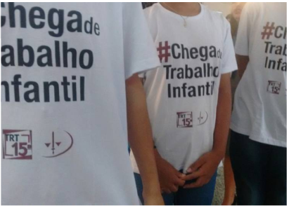

According to the IBGE, in 2023, the Southeast region had the second lowest proportion of children and adolescents in child labor, with 3.3%. In absolute numbers, the Southeast region had 478 thousand people in child labor.

According to Labor Judge Camila Ceroni Scarabelli, responsible for the Special Labor Court for Children and Adolescents in the Campinas Region, between March 2015 and March 2019, more than 500 cases were registered in the Labor Court of Campinas. According to her, the great challenge is to identify the irregularities so that the appropriate measures can be taken by the Court.